누리지음 CMS 기본 매뉴얼
eGovFramework 5.0 기반 공공기관 CMS — 플랫폼 기본 기능 사용 안내
대상: 최고관리자 · 운영자 · 홈페이지 방문자 | 기준일 2026-11-04
본 매뉴얼은 누리지음의 CMS 고유 기능(사이트·메뉴·콘텐츠·게시판·팝업·이미지·조직·권한·공통코드와
홈페이지 방문자 화면)만 다룬다. 누리지음은 AI 미포함 CMS 플랫폼이다.
목차
- 누리지음 소개
- 공통 사용 기준
- 최고관리자
- 운영자
- 홈페이지 방문자
1. 누리지음 소개
누리지음은 eGovFramework 5.0 기반의 공공기관 CMS 플랫폼이다. 여러 공공기관 누리집(웹사이트)을 한
콘솔에서 생성·운영하며, 콘텐츠·게시판·메뉴·권한을 도메인 서비스로 분리해 관리한다.
| 역할 |
콘솔 등급 표기 |
주요 업무 |
| 최고관리자 |
전체관리자 · 사이트관리자 |
사이트·도메인·공통코드·권한·감사 로그·운영 진단 |
| 운영자 |
운영자 |
메뉴·콘텐츠·게시판·팝업·이미지·조직 |
| 홈페이지 방문자 |
(콘솔 없음) |
공개 메뉴 탐색, 콘텐츠·게시글 조회, 첨부 이용 |
2. 공통 사용 기준
2.1 관리자 화면 구성
관리자 콘솔에 로그인하면 왼쪽 사이드 메뉴, 위쪽 머리글, 가운데 본문으로 된 화면이 열린다. 등급에 따라 보이는 메뉴가 다르다.
- 사이드 메뉴 — 맨 위 누리지음 로고, 「대시보드」, 「이용자 만족도 › 만족도 현황」, 「사이트 관리」(메뉴 · 콘텐츠 · 게시판 ·
팝업존 · 이미지 · 통합회원 · 부서 및 조직), 「운영관리」(사이트 · 공통코드 · 권한 · 감사 로그 · 운영 진단 · 연결 서비스). 연결 서비스가
등록한 관리자 메뉴는 그 아래(또는 대시보드 바로 아래)에 묶음으로 붙는다. 맨 아래 「사용자 매뉴얼 바로가기」.
- 머리글 — 작업 사이트 전환, 「메뉴 및 콘텐츠 검색」(「/」 키로 빠른 이동), 「사이트 바로가기」(작업 사이트의 방문자 화면),
「글자·화면 설정」(글자 크기 기본 · 115% · 130%, 화면 모드 기본 · 고대비), 사용자 이름 · 등급과 ▾ 단추.
- 사용자 메뉴(▾) — 이름 옆 ▾ 를 누르면 「마이페이지」와 「로그아웃」이 나온다. 알림 칸은 없다.
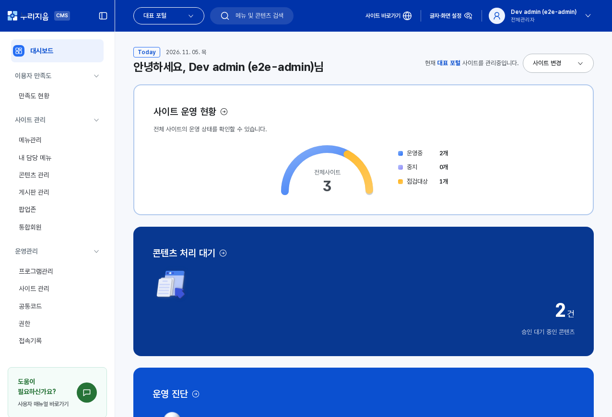
2.2 작업 사이트와 대시보드
대부분의 운영 업무는 특정 사이트를 대상으로 한다. 머리글의 사이트 전환이나 대시보드의 「사이트 변경」에서 사이트를 고르면 지금
화면을 유지한 채 작업 사이트만 바뀐다. 사이트가 필요한 작업에서 값이 없으면 실행이 막힌다.
대시보드에는 사이트 현황(운영중 · 중지 · 점검대상), 「콘텐츠 처리 대기」 · 「운영 진단」, 작업 사이트의 「콘텐츠 운영 현황」(콘텐츠 ·
게시판 · 팝업존 · 이미지 수), 「구글 애널리틱스(GA4) 이용 통계」, 최근 콘텐츠, 최근 시스템 활동 로그가 있다. GA4 영역은 늘 보이고,
GA4 를 연결하기 전에는 「GA4 연결 전」 안내가 나온다.
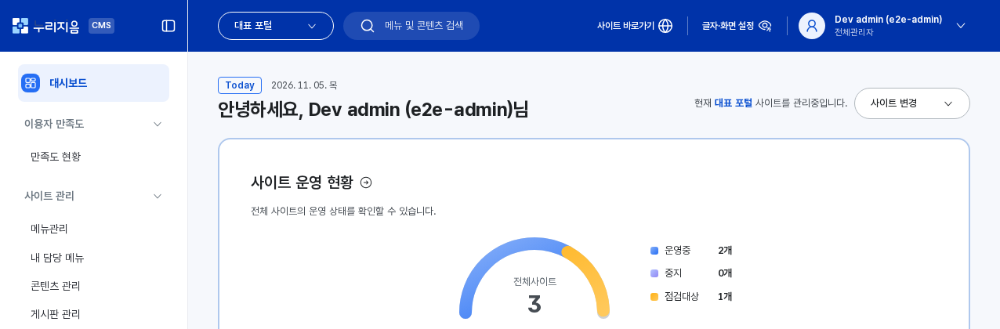
권한과 감사 — 사용자는 자신에게 부여된 역할과 사이트 범위 안에서만 작업한다. 생성·수정·삭제·승인은
실행 전 대상과 영향을 확인하며, 비밀값·토큰·접속정보·개인정보 원문은 화면과 문서에 남기지 않는다. 목록 엑셀 내려받기도
감사 로그에 남고, 감사 기록을 남기지 못하면 파일을 주지 않는다.
3. 최고관리자
3.1 사이트·도메인 관리
최고관리자는 CMS에서 관리할 사이트를 생성·조회·수정하고, 사이트에 연결되는 도메인(host·context path)을
관리한다.
- 사이드 메뉴 「운영관리 › 사이트」를 연다.
- 새 사이트 등록을 누른다.
- 사이트명 · 사이트 코드 · 기본 언어 · 기본 채널을 입력한다.
- 등록으로 저장한다.
사이트 코드는 소문자로 바꿔 공개 주소 앞부분과 이미지 폴더 이름으로 쓴다(예: 코드 KOR → kor). 도메인은
사이트 상세의 새 도메인 등록(HOST · Context Path · Redirect Policy)으로 더하고, 도메인 행 메뉴에서 「대표 지정」 등을 한다.
사이트 삭제 — 도메인과 함께 그 사이트의 메뉴·주소(라우트)·콘텐츠·팝업·게시판을 지우고, 이미지 폴더와 부가 파일
폴더는 보관 폴더(.deleted/)로 옮긴다(공개 주소에서 사라진다). 끝나면 지운 건수(메뉴 · 주소 · 콘텐츠 · 팝업 · 게시판)를
알려 준다. 하나라도 지우지 못하면 사이트는 남겨 두므로 다시 삭제한다. 지운 사이트를 미리보기(?previewSite=)로 열면
「찾을 수 없는 사이트입니다」(404)가 나온다.
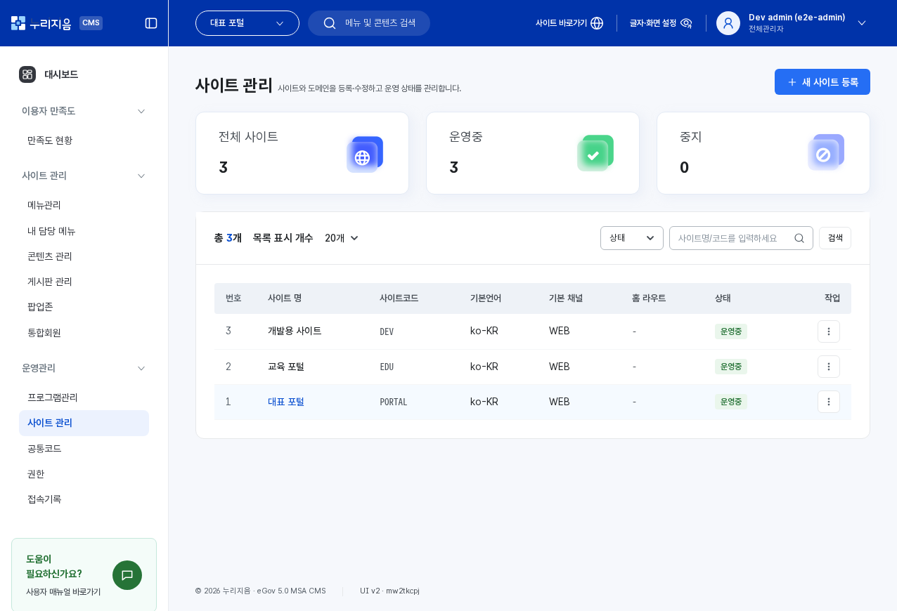
주의 — 같은 host/context path 조합은 중복 등록하지 않는다. 운영 DNS 변경과 CMS 도메인 등록은 별도
작업이므로 반영 순서를 확인한다.
3.2 공통코드 관리
공통코드는 사이트·기능에서 쓰는 분류값·상태값·업무 코드를 코드 그룹과 세부 코드로 나누어 관리한다. 게시판 유형 선택지도
공통코드 그룹에서 읽는다.
- 사이드 메뉴 「운영관리 › 공통코드」를 연다.
- 그룹은 새 코드 그룹, 그룹 안의 코드는 새 코드 등록으로 더한다.
- 코드 행의 작업 메뉴에서 「수정하기」로 코드명 · 정렬 순서를 고치거나 사용 여부를 바꾼다.
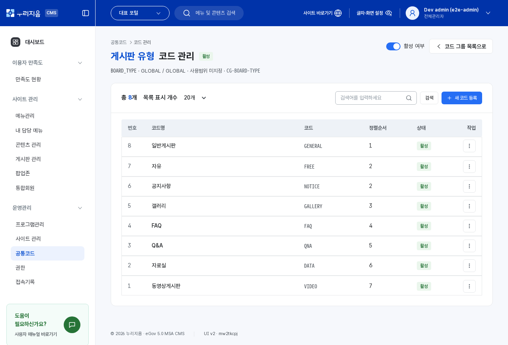
원칙 — 공통코드를 업무 상태 저장소로 오용하지 않는다. 업무 상태는 각 도메인 서비스가 소유하고,
공통코드는 분류·표시값 중심으로 쓴다.
3.3 권한
사이드 메뉴 「운영관리 › 권한」은 탭 넷이다: 「권한그룹관리」 · 「권한그룹명단관리」 · 「서브관리자관리」 · 「관리자접속IP관리」.
메뉴관리 · 메뉴 수정 · 게시판 관리 · 권한 화면 머리의 권한그룹 단추와 접근권한 선택칸의 「⚙ 권한그룹관리…」는 오른쪽 패널을 연다. 화면을 떠나지 않고 권한그룹을 만들고 명단을 넣을 수 있고, 고치던 접근권한 표는 그대로 남는다. 메뉴에서 열었으면 그룹 상세의 「○○ 접근권한에 추가」로 바로 표에 넣는다(저장해야 반영). 그룹을 지우면 쓰던 메뉴 규칙과 관리자 권한에서도 빠진다.
- 「권한그룹관리」에서 권한그룹 등록을 누른다. 그룹명과 누구를 넣을지(관리자 · 회원)를 고른다. 그룹코드는 저절로 붙는다.
- 등록하면 「권한그룹명단관리」로 넘어간다. 찾기 칸에서 통합회원을 찾아 명단에 넣는다. 기간을 고르면 그 날까지만 권한이 있다.
- 관리자 권한그룹에 든 통합회원은 「서브관리자관리」에 저절로 나오고, 통합회원 아이디로 콘솔에 로그인한다(4.7). 별도 등록 화면은 없다.
- 「서브관리자관리」에서 권한그룹을 체크하면 명단 줄이 생긴다. 「계정 폐기」는 모든 권한그룹에서 해지하고 로그인을 막는다. 통합회원 자격은 남는다.
- 「관리자접속IP관리」에서 끔 · 감시 · 차단을 고르고 허용 IP 대역을 등록한다. 지금 접속 IP 가 허용 대역에 없으면 차단으로 바꿀 수 없다. 차단 중에는 지금 접속 IP 를 허용하는 마지막 대역을 끄거나 지울 수 없다. 다른 대역을 먼저 추가하거나 모드를 바꾼다.
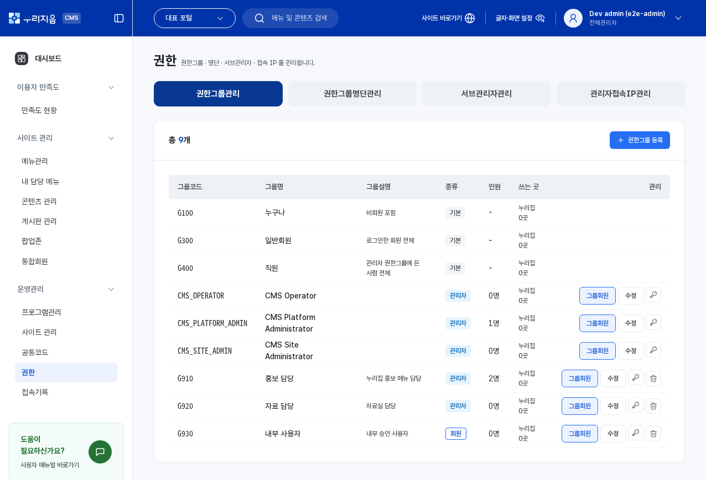
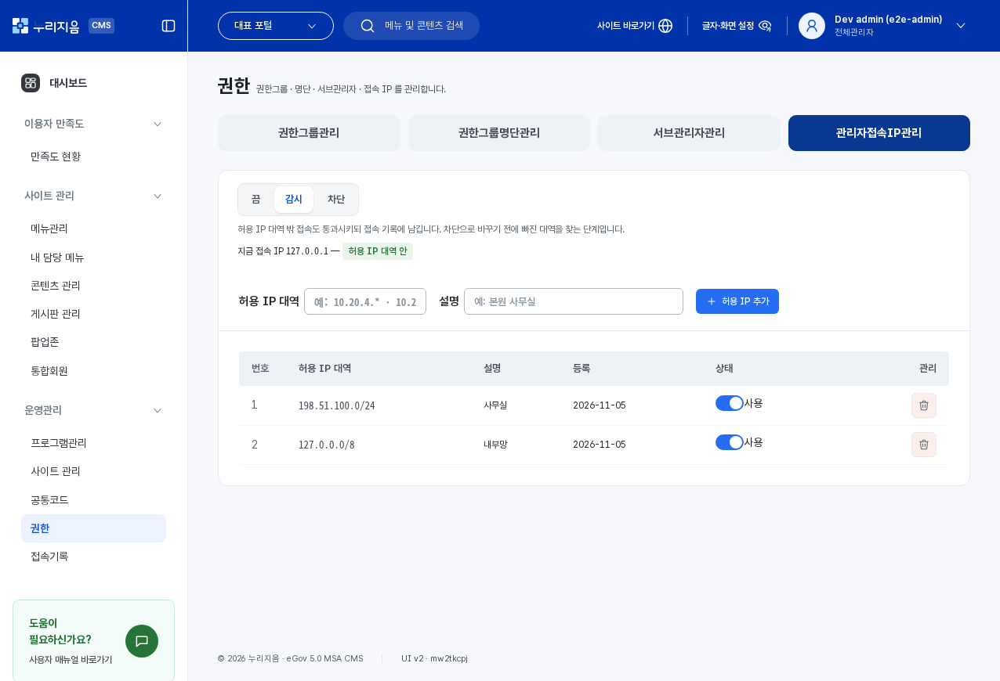
3.4 운영 진단·감사
최고관리자는 「운영관리 › 운영 진단」에서 관리자 셸 상태, 프록시 대상(action별 도메인 서비스 연결), 실행 결과(컨텍스트
누락·업스트림 오류·반려 메타데이터)를 확인한다. 변경 이력과 내려받기 기록은 「감사 로그」에서 추적한다.
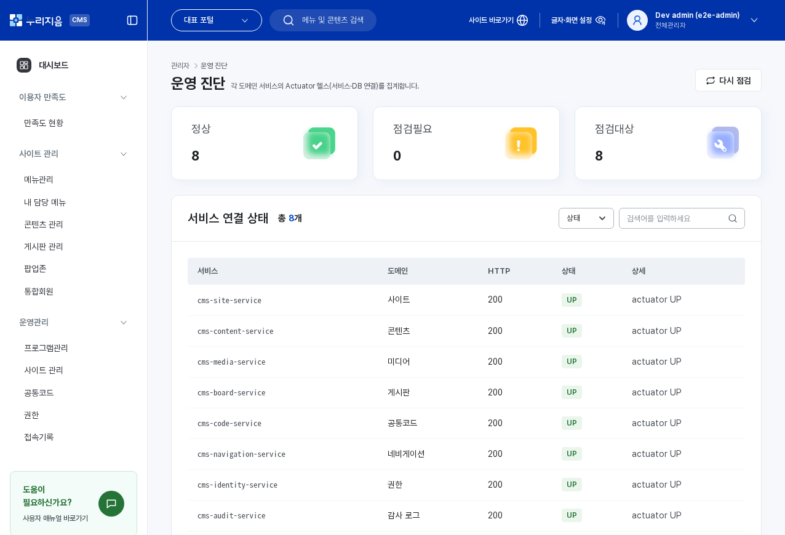
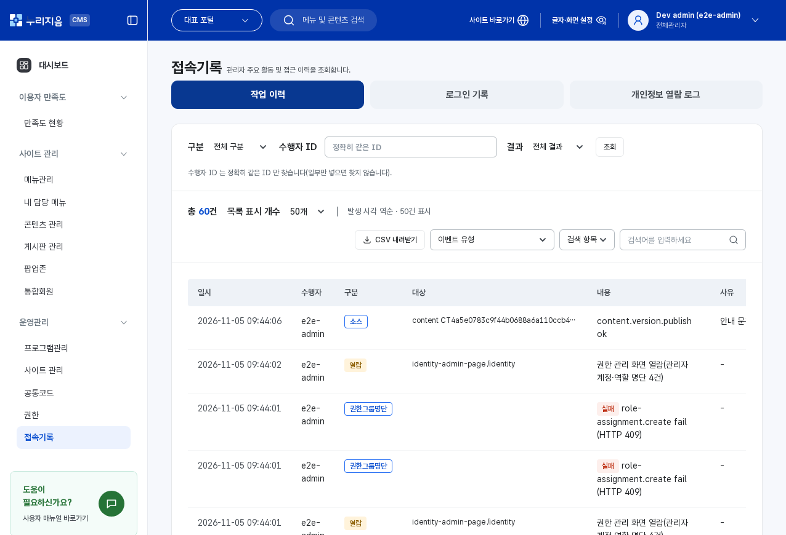
장애 확인 순서: ① 관리자 화면이 열리는지 → ② 해당 action의 프록시 대상이 존재하는지 → ③ 사이트
컨텍스트 등 필수 값이 입력됐는지 → ④ 실행 결과의 상태·반려 메타데이터·다음 조치 안내 → ⑤ trace id로
도메인 서비스 로그 대조.
3.5 프로그램관리
MSA 를 이루는 서비스를 골라 관리자 메뉴와 사용자 메뉴에 붙인다. 주소를 직접 적지 않는다.
- 서버 담당자가 서비스 목록 파일(설정
CMSMSA_SERVICE_CATALOG)에 서비스를 추가하면 「운영관리 › 프로그램관리」에 「등록 전」으로 나온다. 재기동은 필요 없다.
- [등록]을 누르면 서비스가 제공하는 「관리자 메뉴」와 「사용자 화면」이 나온다. 쓸 것만 체크해 저장한다.
- 고른 관리자 메뉴는 콘솔 왼쪽 메뉴에 바로 나온다. 고른 사용자 화면은 「메뉴관리」에서 메뉴 유형 「프로그램」의 연결 대상으로 고른다. 주소가 비어 있으면 화면 주소가 채워진다.
- 상태가 DOWN 이거나 이유가 표시된 서비스는 고를 수 없다. 표시된 이유를 서버 담당자에게 전달한다.
- 사이트 메뉴가 쓰는 화면은 빼거나 해제할 수 없다. 메뉴의 연결 대상을 먼저 바꾼다.
- 서비스에 화면이 늘면 [다시 읽기] 뒤 [선택]에서 「새 항목」을 체크한다. 이미 고른 항목은 바뀌지 않는다.
4. 운영자
4.1 메뉴 관리
메뉴는 방문자에게 보이는 탐색 구조다. 메뉴에 주소를 적는 것이 곧 공개 주소(라우트) 등록이라, 라우트를 따로 다루는 화면은 없다.
- 사이드 메뉴 「사이트 관리 › 메뉴」를 연다.
- 새 메뉴 등록을 누른다.
- 메뉴명을 입력하고 상위 메뉴를 고른다. 메뉴 코드(
sub01 · sub01_01 …)는 상위 메뉴 아래 다음 코드가 채워진다.
- 메뉴 유형(묶음 메뉴 · html · 게시판 · 프로그램 · 외부연계)을 고르고 주소와 연결 대상을 정한다. 주소는 목록에서 고르거나
「직접입력」으로 적는다. 외부연계는 연결 링크 URL 을 적는다.
- 노출여부 · 정렬순서를 정하고 등록하기로 저장한다.
- 게시판 메뉴 — 메뉴 유형이 게시판이면 연결 대상 옆 [추가] · [수정] · [삭제]로 그 자리에서 게시판을 만들고 고친다.
메뉴나 주소가 쓰는 게시판은 지우지 않는다.
- 목록 — 「메뉴 유형」 필터와 검색, 고른 메뉴의 「상태변경」(사용 · 미사용) · 「선택 삭제」, 「엑셀다운로드」 · 「XML생성」
(고른 메뉴와 그 상위 메뉴, 고르지 않으면 사이트 전체). 메뉴를 지우면 그 메뉴만 쓰던 주소도 지워진다.
- 일괄 등록 — 메뉴 파일(xlsx · csv · xml)을 올려 메뉴 트리를 한 번에 만든다. 패널 바닥 단추는 [취소] · [등록] 둘이다.
[등록]을 누르면 먼저 파일 전체를 검사하고, 오류가 하나라도 있으면 아무것도 등록하지 않고 파일 칸 위 알림에 행 · 메뉴코드 · 사유를
보여 준다. 오류가 없으면 바로 등록하고 「등록 완료」 결과표(생성 · 갱신 · 변화 없음)를 보여 준다. 빈 양식은 패널의 [엑셀] · [CSV] · [XML].
- 만족도 조사 — 메뉴 수정의 「만족도 조사」를 켜면 그 메뉴의 상세 화면 아래에 만족도 조사가 나온다. 응답은
「이용자 만족도 › 만족도 현황」에서 본다.
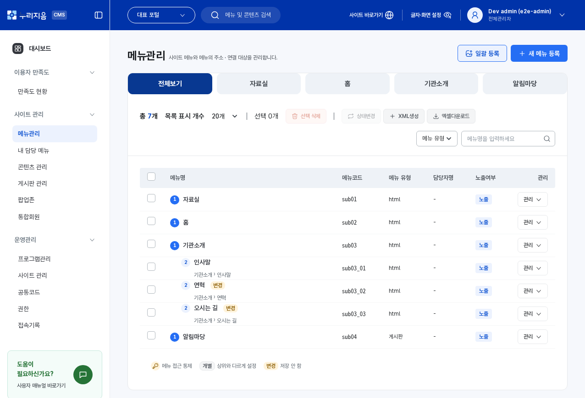
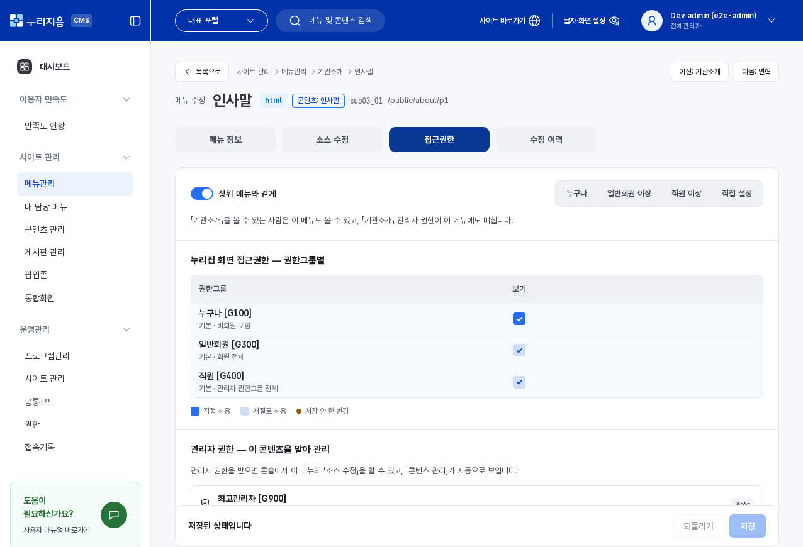
주의 — 메뉴의 노출여부를 끄면 공개 화면 메뉴에서 빠지고 그 메뉴만 쓰는 주소도 닫힌다. 주소를 바꾸기 전 기존 링크를
확인한다. 메뉴 코드나 상위 메뉴를 바꿔도 주소는 그대로다.
리다이렉트·route alias(현재 UI 미연결) — 리다이렉트와 route alias는 도메인 API(게이트웨이 op)로
제공되지만, 현재 관리자 콘솔에 전용 화면이 노출되지 않는다. 운영 반영 시 API 또는 후속 화면을 통해
처리한다.
메뉴명이나 「관리 ▼ › 수정」을 누르면 수정 화면이 열린다. 탭은 「메뉴 정보」 · 「소스 수정」 · 「접근권한」 · 「수정 이력」이고 한 화면에서 바뀐다.
- 저장 막대 — 아래쪽에 저장 안 한 변경 건수가 나온다. 사유를 적어야 저장한다. 사유와 바뀐 항목은 「수정 이력」과 「접속기록」에 남는다.
- 저장 안 한 변경 — 목록으로 나가도 이 브라우저 탭에 남고, 목록의 메뉴명 옆에 「변경」으로 표시된다. 다시 열면 이어서 고치고, 「취소」 · 「되돌리기」로 지운다. 탭을 닫거나 로그아웃하면 사라진다. 연결한 콘텐츠에 게시 전 임시저장본이 있어도 「변경」으로 표시된다.
- 누리집에 출력합니다 — 끄고 저장하면 저장만 하고 공개 화면은 그대로다. 목록 「XML생성」을 누르면 대기한 변경이 공개된다. 주소 · 연결 대상 변경은 바로 반영된다.
- 소스 수정 — 콘텐츠 메뉴의 본문을 이 탭 안에서 고친다. 저장하면 이 탭으로 돌아온다.
- 접근권한 — 빠른 설정(누구나 · 일반회원 이상 · 직원 이상 · 직접 설정)이나 권한그룹별 표로 누가 볼 수 있는지 정한다. 표시가 없는 하위 메뉴는 상위 메뉴를 그대로 따른다. 「관리자 권한」에는 이 메뉴를 맡을 권한그룹과 사람을 넣는다.
- 목록의 열쇠 표시는 누구나 볼 수는 없는 메뉴, 「개별」은 상위와 다르게 정한 메뉴, 「대기」는 아직 누리집에 나가지 않은 메뉴다.
4.2 콘텐츠 운영
콘텐츠는 페이지 본문과 버전을 관리한다. 고치는 임시저장본은 하나이고, 버전 번호는 게시할 때 붙는다.
- 사이드 메뉴 「사이트 관리 › 콘텐츠」를 연다.
- 새 콘텐츠 등록을 누른다.
- 제목과 본문을 입력한다(본문 형식은 고르지 않는다 — 새 콘텐츠는 HTML 편집기). 그림은 편집기의 「이미지 삽입」으로 넣는다.
- 필요하면 대표 썸네일(5MB)과 첨부파일을 올린다.
- 게시 여부(게시중 · 임시저장 · 예약 게시)를 고르고 게시하기, 또는 임시저장을 누른다.
- 수정 화면 — [임시저장]은 비공개 임시저장본으로만 저장한다. [수정하기]는 게시 중인 콘텐츠면 저장하고 바로 공개 화면에
반영하고, 게시 전 콘텐츠면 저장만 한다. 오른쪽에 게시 여부 설정, SEO 메타, 버전 이력이 있다.
- 버전 이력 — 게시한 버전은 v1 · v2 …, 게시 전 버전은 「임시저장」으로 보인다. 버전마다 미리보기 · html 내려받기 ·
「이 본문으로 되돌리기(임시저장)」 · 발행 · 검토 요청 · 버전 삭제가 있다. 게시 · 검토 기록이 있는 버전은 지울 수 없다.
- 목록 — 상태 필터(「미게시 초안 있음」 포함), 「상태변경」(게시 · 비공개), 「엑셀다운로드」, 「선택 내려받기」(ZIP),
「ZIP 반입」. 디자인팀과 주고받는 흐름은 별도 안내서 「누리지음 콘텐츠 주고받기」에 있다.
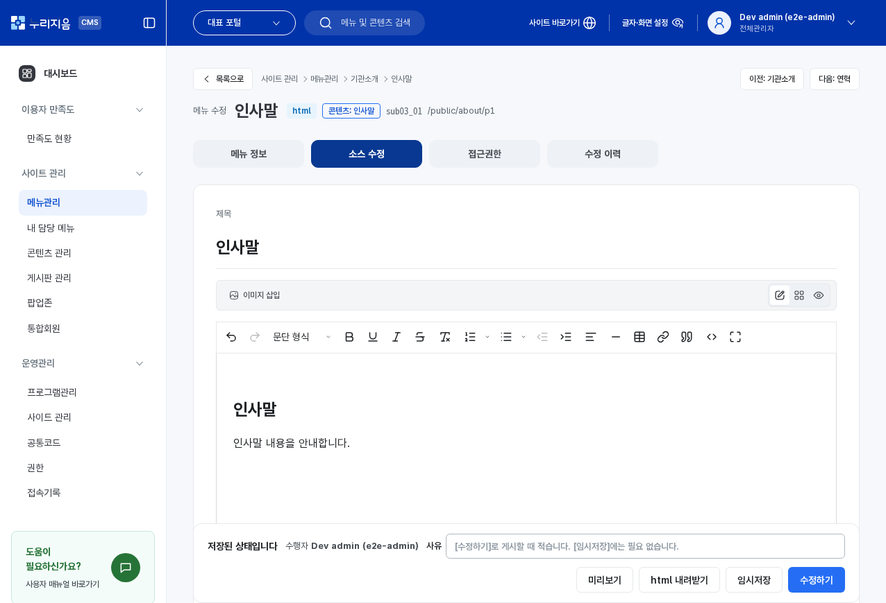
4.3 게시판 운영
게시판은 게시판 설정과 게시글·답변으로 나누어 관리한다.
- 사이드 메뉴 「사이트 관리 › 게시판」을 연다.
- 새 게시판 등록을 누른다.
- 게시판명 · 게시판 코드 · 게시판 유형을 입력한다.
- 「첨부파일 허용」과 최대 개수, 공개 누리집의 목록 · 읽기 · 첨부 내려받기 범위(누구나 · 로그인 회원 · 역할 지정, 기본 누구나)를 정한다.
- 등록으로 저장한다.
- 게시글 관리 — 게시판 행 메뉴의 「게시글 관리」. 글 등록 화면 단추는 [미리보기] · [임시저장] · [취소] · [게시하기]다.
[미리보기]는 저장하지 않고 새 창에서 공개 상세 모양으로 보여 준다. 「공지사항으로 등록」을 켜면 공지로 올라간다. 글 분류(카테고리)
선택은 없다.
- 첨부 — 첨부를 허용하지 않은 게시판은 첨부 칸이 없다. PDF 첨부는 수정 화면에서 「미리보기」(새 창)로 연다.
- [권한] — 게시글 관리 화면의 [권한] 패널에서 공개 누리집 범위, 역할별 관리자 권한, 담당자 계정을 정한다(역할 · 담당자는
전체관리자만).
- 질문답변 게시판은 글 상세에서 답변을 쓴다.
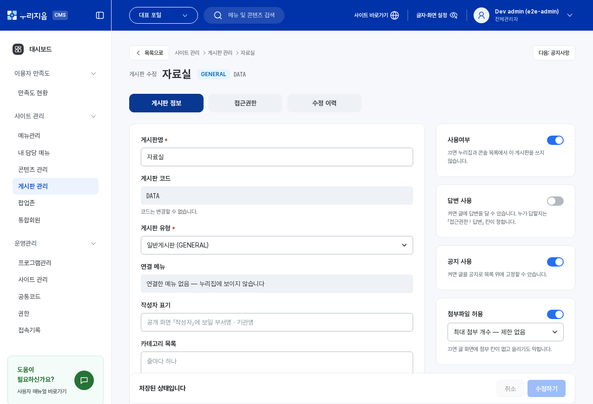
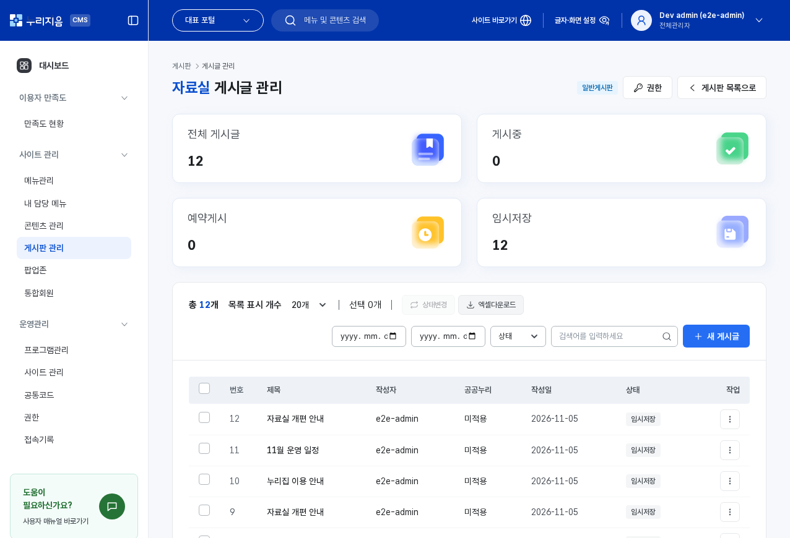
게시판명을 누르면 수정 화면이 열린다. 탭은 「게시판 정보」 · 「접근권한」 · 「수정 이력」이다. 「답변 사용」을 끄면 답변을 달 수 없고, 「공지 사용」을 끄면 글 화면에 공지 칸이 없다. 접근권한은 연결한 메뉴의 접근권한과 같은 것이다. 목록 위 「게시판 권한관리」에서 게시판마다 동작별 권한그룹을 한 표로 본다.
4.4 팝업 관리
사이드 메뉴 「사이트 관리 › 팝업존」에서 공지·안내 팝업을 만든다. 제목 · 내용 · 기간 · 이미지 · 링크 URL · 위치 · 노출여부 · 정렬순서를 정한다.
- 이미지는 「이미지에서 추가」로 이미지 폴더에서 고르거나 바로 올린다. 첫 항목이 대표 이미지이고 [대표로]로 바꾼다.
- 그림마다 대체 텍스트를 적는다(비우면 팝업 제목이 쓰인다).
- 링크는 「현재창」 · 「새창」 중 어디서 열지 고른다.
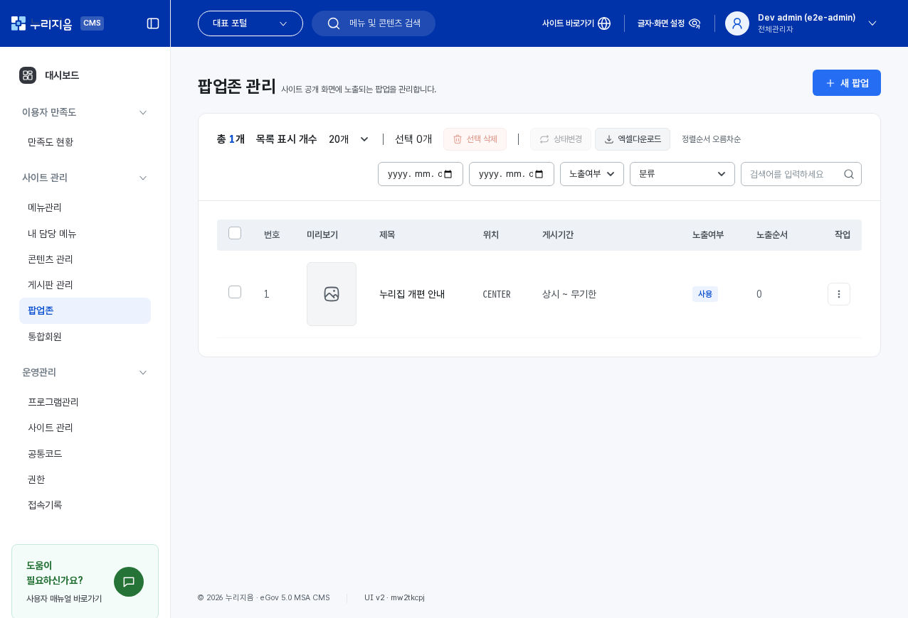
4.5 이미지 관리
콘텐츠 · 게시글 · 팝업 본문의 그림은 이미지 폴더(images/사이트코드/…)에 둔다. 사이드 메뉴 「사이트 관리 › 이미지」에서
왼쪽 폴더 나무(공통 · 사이트 폴더 · 1차 메뉴 폴더)를 고르고, 오른쪽에서 [새 폴더] · [올리기] · [선택 삭제]를 한다. 그림마다 [주소 복사] ·
[사용처]가 있고, 지우기 전에 쓰는 곳을 확인창에 보여 준다. 공통 폴더에 쓰는 것은 전체관리자만 한다.
미디어 관리 — 예전 「미디어」 메뉴는 「이미지」로 바뀌었다. 게시글 · 콘텐츠의 첨부파일과 대표 썸네일은 각 화면에서 올린다.
4.6 부서 및 조직·통합회원
사이드 메뉴 「사이트 관리 › 부서 및 조직」은 왼쪽 조직도와 오른쪽 직원 목록이다.
- 조직도 아래 부서추가를 누른다.
- 부서 코드 · 부서명 · 상위 부서를 입력한다.
- 등록으로 저장한다.
- 직원 — 직원 목록의 직원 추가로 한 명씩 등록한다. 고른 직원은 「조직 이동」 · 「엑셀다운로드」를 한다.
- 직원 일괄 등록 — 직원 목록의 일괄 등록에서 엑셀(xlsx) 파일을 올린다. 양식은 패널의 [엑셀]로 받는다.
바닥 단추는 [취소] · [등록]이고, 오류가 하나라도 있으면 아무것도 등록하지 않고 파일 칸 위 알림에 행별 오류를 보여 준다. 오류가 없으면
등록하고 「등록 완료」 결과표를 보여 준다. 사이트에 없는 부서는 새로 만든다.
- 부서 복사 · 조직 변경 — 같은 사이트 안에서 부서를 복사하거나 상위 부서를 바꾼다. 다른 사이트로 복사 · 이동하는 화면은 없다.
- 통합회원 — 「사이트 관리 › 통합회원」에서 회원을 검색·등록·수정한다. 회원유형은 선택 목록에서 고른다.
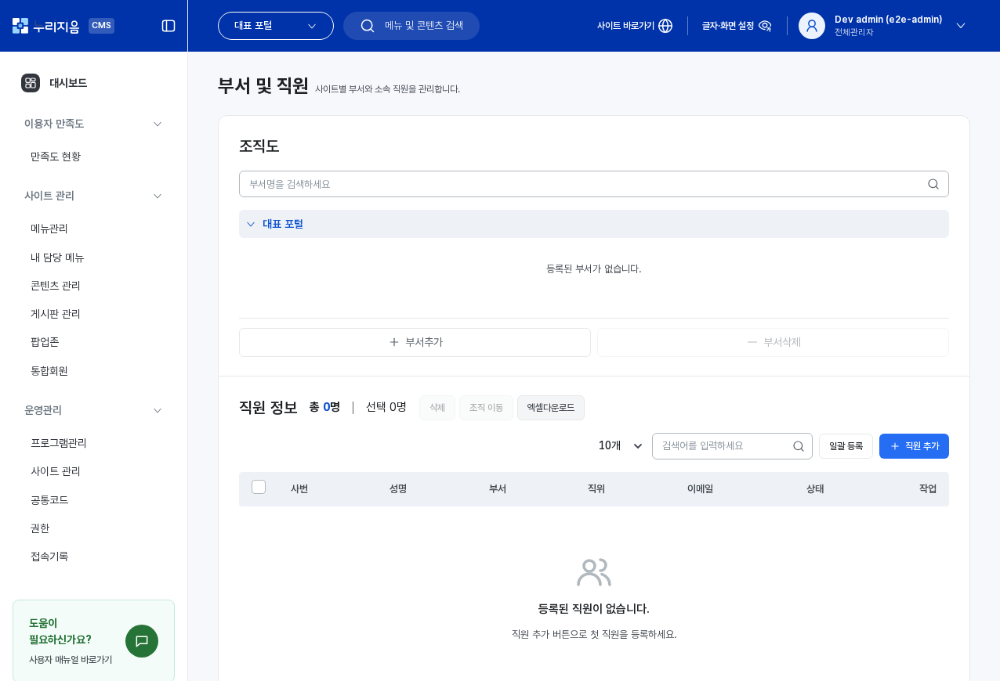
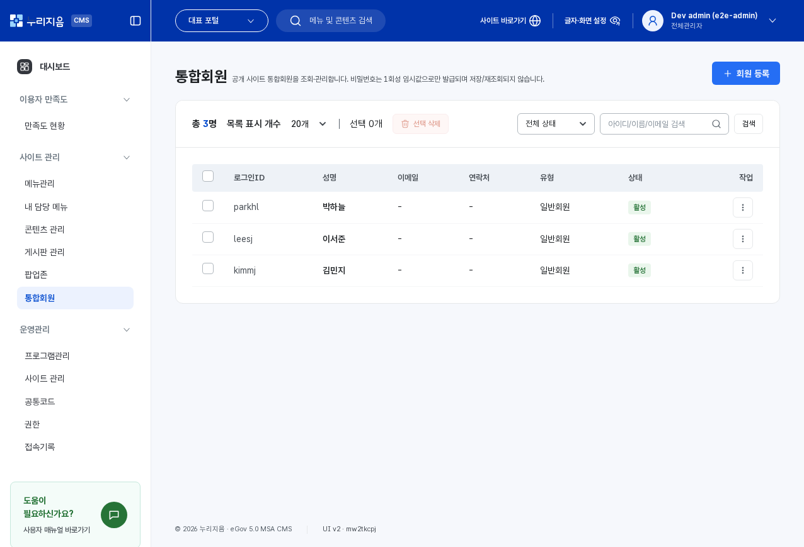
4.7 서브관리자
통합회원 아이디와 비밀번호로 콘솔에 로그인한다. 왼쪽 메뉴에는 「내 담당 메뉴」 · 「콘텐츠 관리」 · 「게시판 관리」만 나온다.
- 「내 담당 메뉴」는 담당자이거나 관리자 권한을 받은 메뉴 목록이다. 「바로가기」로 소스 수정이나 게시글 관리를 연다.
- 맡은 콘텐츠의 본문과 맡은 게시판의 글만 고칠 수 있다. 메뉴 · 게시판 설정, 새로 만들기, 그 밖의 콘솔 화면은 열리지 않는다.
- 맡은 메뉴를 바꾸려면 최고관리자가 그 메뉴의 「접근권한 › 관리자 권한」을 고친다.
5. 홈페이지 방문자
방문자는 공개 메뉴를 통해 콘텐츠·게시판·프로그램 페이지로 이동한다. 활성이고 노출 설정된 메뉴만 운영자가
지정한 정렬 순서로 표시된다.
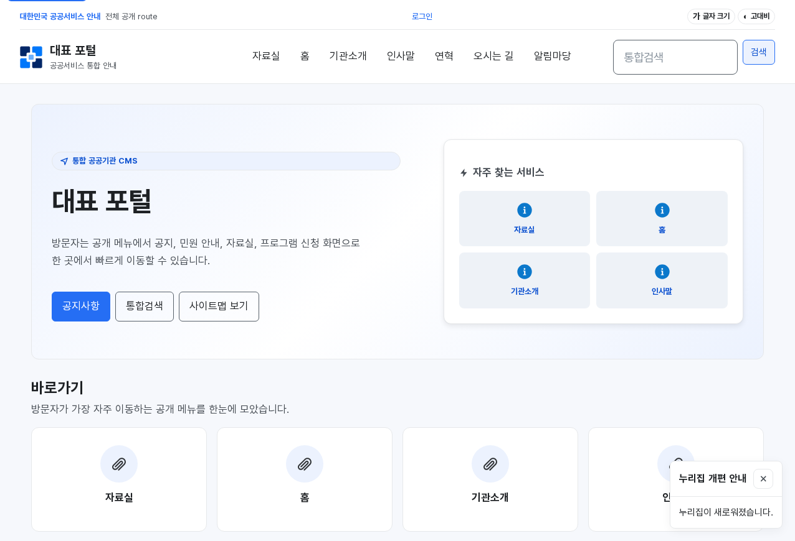
- 공개 홈 — 히어로·자주 찾는 서비스·바로가기·새소식.
- 통합검색 — 검색어 접수와 검색 준비 안내(색인 연동은 후속).
- 게시판 — 게시판의 공개 범위에 따라 목록 · 읽기 · 첨부 내려받기가 열리고, 로그인이 필요하면 로그인 안내가 나온다.
목록 · 상세에 작성자는 보이지 않는다.
- 상세 화면 — 공개 상태와 첨부 공개 정책을 표시하되 내부 키·경로는 숨긴다.
- 오류 안내 — 원인 범주와 다음 이동 경로만 안내하고 stack trace·내부 URL은 노출하지 않는다.
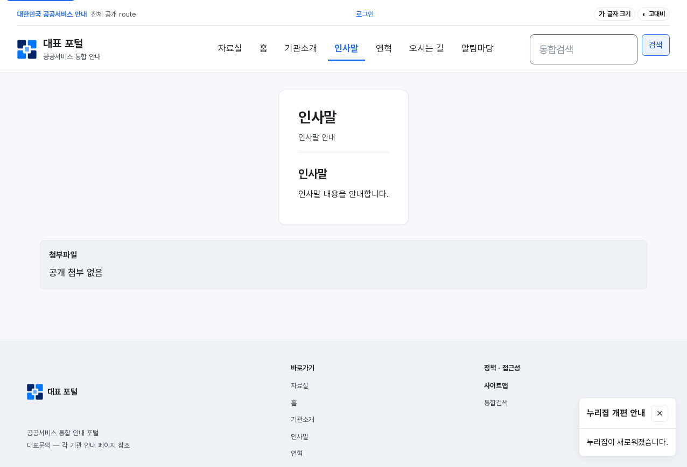
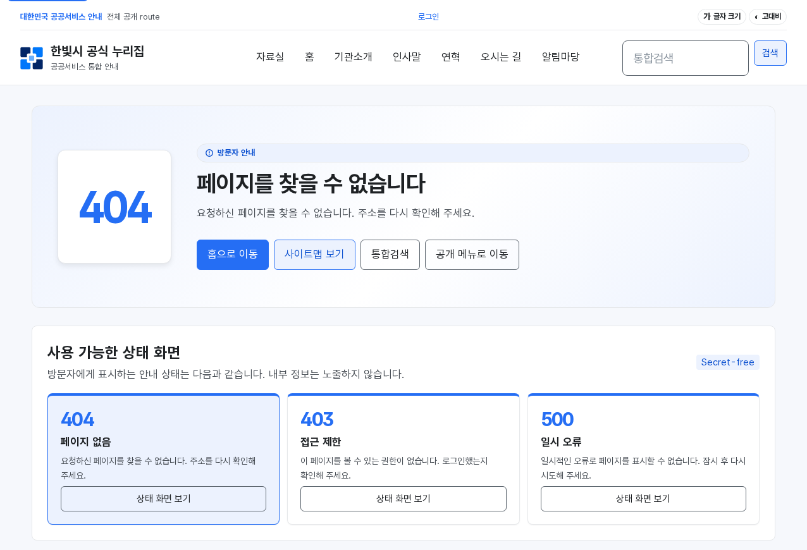
누리지음 CMS 기본 매뉴얼 · 기준일 2026-11-04 · 캡처는 로컬 검증 스택의 누리지음 예전 UI(2026-06)에서 수집했으며
비밀값·개인정보를 포함하지 않는다.
개정 내역: 2026-11-04 — 지금 콘솔에 맞춰 고침(사이드 메뉴 · 머리글 사용자 메뉴 · 대시보드 GA4 · 메뉴 화면과 일괄 등록 · 콘텐츠 버전 ·
게시판 등록과 글 미리보기 · 팝업 · 이미지 관리 · 직원 일괄 등록). 라우트 등록 · 미디어 관리 화면 설명과 그 캡처를 뺐다.
2026-06-16 — 첫 판.